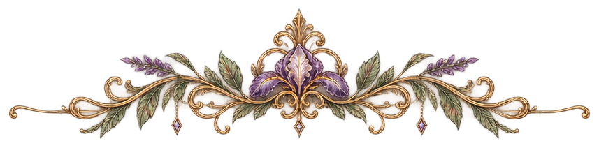
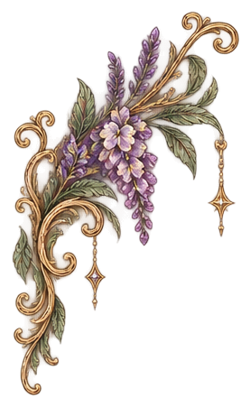
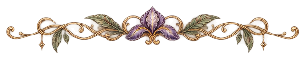
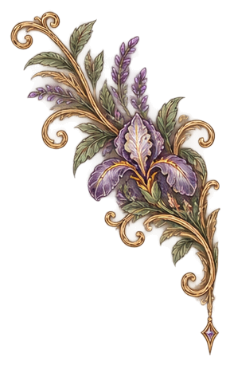
The Books & Reading Collection
Contents
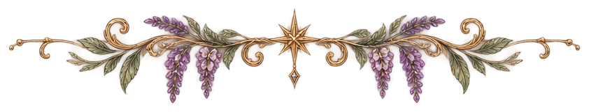
My Reading Story
I wasn’t always the person who had a book in her hand.
I loved stories, I loved learning, and I always enjoyed English and history, but growing up, reading was never my entire personality. I was usually outside, playing sports, running around with friends, or doing literally anything other than sitting inside all day with a book.
That doesn’t mean I didn’t read, though.
Some of my earliest memories of reading are from elementary school, going to the library and picking out books that actually interested me. In first through third grade, I remember reading quite a bit of Nancy Drew. Looking back, that probably explains why I still love a good mystery now. Give me secrets, clues, strange circumstances, and something to figure out and I’m happy.
Just don’t hand me a thriller and tell me it’s the same thing. It is not. 😂
By fourth through sixth grade, Diary of a Wimpy Kid was everywhere, so naturally I read a fair amount of that too. I enjoyed it, but it never really felt like my thing. It was more like one of those books everyone was reading, so of course I wanted to know what the hype was about.
The books that really felt like me were fantasy.
Amulet and Wolves of the Beyond are the two series I remember loving the most. Magical worlds, strange creatures, adventure, fantasy — apparently younger me had already decided what adult me would eventually obsess over.
I Loved Reading — I Just Didn’t Love Being Told What to Read
School has a funny way of making reading feel like work.
Read this book.
Answer these questions.
Analyze this chapter.
Take this test.
Prove that you understood it the right way.
I’ve always loved learning, but I’ve never loved being forced into it.
When I was younger, reading usually came with an assignment attached to it, and I think that made it harder for me to see reading as something I could do purely because I wanted to.
So somewhere around middle school and high school, I mostly stopped.
There weren’t piles of novels beside my bed. I wasn’t constantly working through a series. Reading just wasn’t a major part of my life anymore.
And for quite a while, that was that.
Finding My Way Back
When I started reading again as an adult, I didn’t immediately jump back into fiction.
Around eighteen, I found myself reading more nonfiction and picking things up again. It was mainly self-help and mental health subjects, some poetry, and books that helped me with change into adulthood. These were things easy to explore because I chose them, and much easier topics at times.
That made a huge difference.
There was no assignment. No quiz at the end. Nobody cared how quickly I finished or what I thought the author meant.
I could just read.
Eventually fiction started working its way back into my life too. Around twenty-two, I began reading more novels again, and by the middle of 2025 something finally clicked.
Reading stopped being something I occasionally did.
It became one of my hobbies.
And then, somewhere toward the end of 2025, the floodgates apparently opened because now there is no saving me.
The Reader I Am Now
Now I read constantly.
I read in the morning. I read at night. I plan my evenings around reading. I carry books around. I collect books. I keep track of what I’ve finished. I talk about fictional people like they are individuals I personally know and occasionally need to defend.
Somewhere along the way, I also became the person constantly telling other people to read. Or listen to an audiobook — that counts too.
Sometimes it is as simple as coming across a book and immediately thinking of someone I know. If it reminds me of you, I’m probably going to tell you about it and insist that you read it.
I currently read physical books and books on my Kindle. I also occasionally listen to audiobooks on Audible, on top of plays. Mainly Shakespeare for plays though.
My taste has also become much clearer as I’ve gotten older.
Fantasy is still at the center of it.
Give me dragons, fae, witches, magic, mythology, strange creatures, dangerous kingdoms, impossible trials, hidden histories, dark worlds, and morally questionable characters and I am probably already interested.
I love romantasy. I love darker stories. I love complicated relationships and characters who make terrible decisions for reasons I somehow understand.
I like mystery, but I’m much more interested in uncovering secrets and piecing something together than reading a traditional thriller.
I still love nonfiction too, especially when it involves history, literature, mythology, writing, culture, or anything else that lets me disappear down a research rabbit hole for several hours.
Apparently the child who loved Nancy Drew, magical wolves, and fantasy graphic novels never actually went anywhere.
She just got older and found significantly more complicated books.
What I Look For in a Book
I wish I could say I have some complicated system for choosing what I read, but I really don’t.
Sometimes a book has a pretty title. Sometimes the name sounds interesting. Sometimes the cover catches my attention. Sometimes it is apparently as simple as seeing a word like “cat” or “chocolate” and deciding I need to know more. Other times I read two sentences of the description and decide I need to know what happens.
But there are also times when I am actually looking for something specific, and I have definitely figured out what kinds of books are most likely to pull me in.
I’m especially drawn to fantasy series with immersive worlds, strong characters, mystery, romance, magic, and enough going on beneath the surface that I have something to think about beyond the immediate plot. Series like Caraval and Wicked Games are exactly the kind of stories I tend to gravitate toward, and my most recent obsession has been The Empyrean Series.
I love finding a series that gives me an entire world to become invested in. I want characters I care about, relationships I can get attached to, mysteries and little details I can think about later, and a world that still feels interesting when I put the book down.
I also have some fairly strong preferences about how a story is told. I don’t enjoy books that constantly jump between a large number of points of view. I would much rather stay with one character or a small group of perspectives long enough to actually become attached to them.
Fantasy obviously has an unfair advantage. Dragons, magic, fae, mythology, strange creatures, dangerous worlds, or anything slightly whimsical can get my attention pretty quickly. But I’m not particularly loyal to one type of book. If something sounds interesting, I’ll read it.
I do tend to prefer books somewhere around the 200–500 page range, although that is definitely not a rule. If I’m invested enough, the page count stops mattering.
Mostly, I want a book to give me something to care about. A world I want to explore, characters I become attached to, something interesting to learn, a mystery I want to solve, or simply a story that makes me want to keep turning the page.
Sometimes I know exactly what I’m looking for. Sometimes there really isn’t a deeper reason than: that looks interesting.
Books Became My Quiet Place
As I’ve gotten older, I’ve become much more protective of how I spend my time and who I spend it with. I still love being social and spending time with people I care about, but I’ve also learned that I genuinely enjoy my own company.
Reading has become a huge part of that.
There is something about getting comfortable, making something warm to drink, opening a book, and having absolutely nowhere else I need to be. I can spend an entire evening in another world and be perfectly happy doing exactly that.
My evenings especially have become my favorite time to settle in with a book and have some quiet time to myself.
Of course, “quiet” is relative when I’m emotionally invested in fictional people making terrible decisions.
I’ve come to really value having hobbies that are entirely my own. Reading gives me somewhere to disappear for a while, something new to learn, characters to become attached to, and stories I can come back to whenever I want.
So this little corner of my website is where all of that gets to live — the books I’ve finished, the ones I’m currently obsessed with, the series that emotionally damaged me, the characters I refuse to shut up about, and probably far too many thoughts about dragons.
Welcome to my bookshelf.
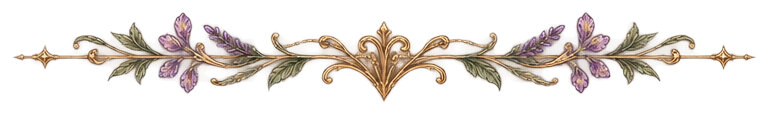
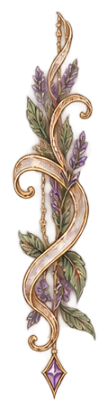
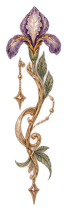
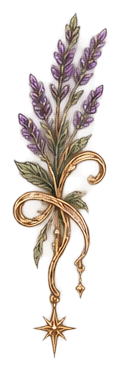
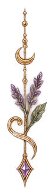
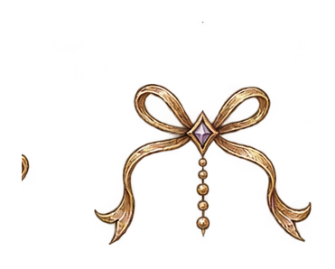
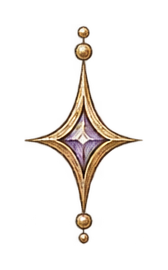
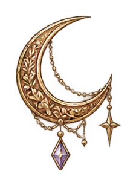
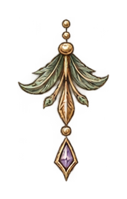
My Book Genres, Explained
My reading taste is kind of all over the place, but there is definitely a pattern.
Fantasy
Fantasy is the big one. If there are dragons, fae, witches, magic, ancient powers, strange creatures, cursed kingdoms, secret histories, or some completely made-up world I can disappear into, I’m interested. I especially love fantasy that feels immersive and gives me something to obsess over beyond just the main plot.
Romantasy
Romantasy is probably the easiest way to describe a huge chunk of what I read now. I like romance, but I like it even more when there’s also magic, danger, political chaos, war, creatures, or some ridiculous life-or-death situation happening in the background.
Dark Romance
Dark romance works for me when the story itself is actually interesting. I like intensity, morally questionable characters, complicated relationships, obsession, power dynamics, and the occasional completely unhinged situation. I do not, however, want to read something that feels like it exists only for shock value.
Western Romance
Western romance is one of my favorite comfort genres. Cowboys, ranches, horses, small towns, family drama, and romance — apparently that is all it takes. I especially love reading them between heavier books and fantasy series when I want something fun and easy to disappear into.
Mystery
Mystery has always been one of my genres, probably thanks to Nancy Drew. I like secrets, clues, missing pieces, hidden motives, and trying to figure things out as I go. But mystery and thriller are not the same thing to me. I usually want intrigue, not nonstop panic.
Classics & Literature
Classics and literature are something I’ve grown more interested in as an adult. I like the language, the history behind the books, and seeing how stories and writing styles have changed over time. I don’t read classics because I feel like I’m supposed to. I read them when I’m actually curious about them.
Nonfiction
Nonfiction is where my love of learning shows up the most. History, mythology, literature, writing, culture, humanities, and random subjects I suddenly decide I need to know everything about can all end up on my shelf.
Self-Help
Self-help has been part of my reading for a long time, especially since it was one of the main things I picked up when I started reading more again as an adult. I own a lot of it at this point. I tend to gravitate toward books about personal growth, relationships, psychology, habits, communication, and generally understanding myself and other people a little better.
Mythology & Folklore
Mythology and folklore are kind of their own category for me at this point. Celtic folklore, British mythology, fae, dragons, mermaids, old legends, strange creatures — all of that scratches the same part of my brain that fantasy does, except with the added bonus of knowing people have been telling these stories for centuries.